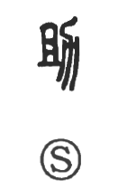

助

Kun: tasukeru, tasukaru, suke | On: jo
help, aid
Explanation
The character 助 combines 且, which depicts a spade used for cutting grass, with 力, the plow for digging and cultivating soil. Together they express the joint effort of clearing and tilling land, hence the idea of providing assistance in cultivation. From this agricultural origin, the meaning broadened beyond farming to the more general sense of helping or aiding another. Thus 助 carries the sense of cooperative support, whether in labor or in personal aid.